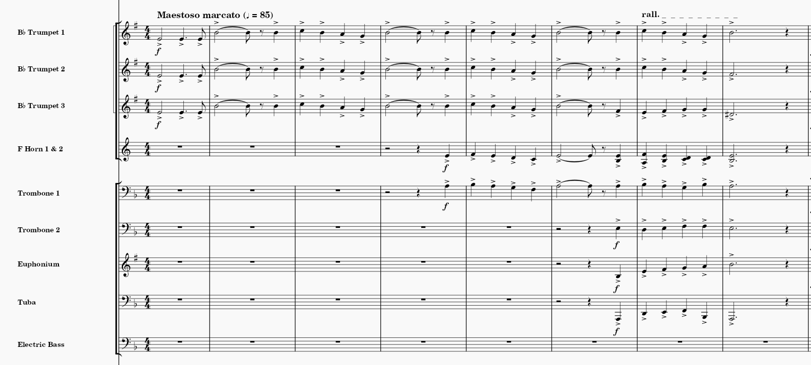

Learning can be very social. We often learn by observing others and copying actions that
give positive results and avoid copying those that give less favourable results (Lecture 6). Composers are often influenced and taught by other composers
either directly (by having a teacher giving them feedback on their work), or indirectly (by studying other (and older) composers' works). I have personally
seeked help from my previous orchestra conductor who is a famous Canadian composer, as well as my high school band teacher. My band teacher is especially
helpful when I write band music because she is able to tell me if my pieces are playable on all the band instruments, as well as gives
me ideas when I am stuck.
Nowadays, there are many online communities of composers (like in Facebook groups) that are there to give advice on others' compositions and that can help
inspire aspiring composers. Ertmer & Newby (2013) realized that recently, much of our learning occurs through conversation because knowledge and other people
are much more accessible through the Internet.
There are several criteria that define a good model.
Competence: the model is an expert at the topic. This is why we would seek feedback from other
people who have composed before because they can give valuable tips on how to write certain passages, or how to express your ideas in music. For instance,
I have learnt from my band teacher the importance of writing rhythms in a way that makes it easier to interpret for music students. I learned that it is easier
to write syncopated rhythms by emphasizing where the beats are.
Power & Prestige: the model is well known and influential. Composers will often be influenced by the big names in classical music: Beethoven, Bach,
Chopin, Debussy, etc. because they were known to have created very influential pieces of music that we still know and play to this day. My style has certainly been
influenced by these great composers to the point where I model and use their melodies as a starting point for an idea. Some examples from my own work:

Relevant:the model is someone who is similar to the learner. Composers will probably be inspired by people whose pieces they enjoy so they might write
more like them. Furthermore, composers would probably have models that come from similar cultures. Because I was born in Canada, and my ancestry
is European, I am very much more likely to adopt Western composition techniques and methods. I use common Western tonal scales for instance. Perhaps if I had had an Asian
background, I would have been more influenced by Asian composers and modes in my pieces. Although it is extremely common to borrow interesting aspects of different cultures
to make a piece interesting or to make it express a certain story (example: Borodin Steppes of Central Asia has an Oriental theme even though he's Russian).
Several cognitive processes are involved in modelling (make the connections with memory and attention here)
Different cultures have different music, so it seems natural that composers from different cultures have different composing styles, and that future people coming
from similar cultures adopt similar styles as well. It even goes as far as different cultures have different scale modes.
Insert example of different modes
References
Lecture 2: What is Learning?
24 inspirational quotes about classical music. ClassicFM. https://www.classicfm.com/discover-music/latest/quotes-about-classical-music/
Ertner, P.A., Newby, T.J. (2013). Behaviorism, Cognitivism, Constructivism: Comparing Critical Features From an Instructional Design Perspective. Performance Improvement Quarterly, 26(2), 43-71. DOI: 10.1002/piq
Schunk, XXX. Social Cognitive Theory & Self Regulated Learning